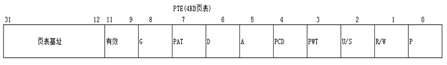
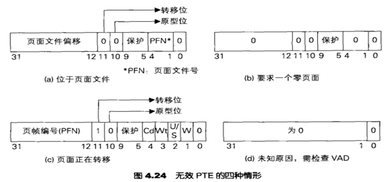

# 缺页异常的由来
先来复习一下 PTE：

P 位 代表当前页面是否有效。
当 CPU 访问一个地址，其 PTE 的 P 位为 0，此时会产生缺页异常；
在 windows 中，缺页异常是时刻在发生的。
Windows 利用缺页异常机制让我们更加有效的访问内存。
海哥原话：当我们的物理内存大小只有 2MB 时，当我们需要用到某个物理页的时候，将对应物理页的 P 位置 1，当我们不再需要使用该物理页时，再将其 P 位置 0，这样的内存使用效率是非常低的。
因此 windows 不是这样设计的 —— 只有正在使用的线性地址，才会被挂上物理页，当物理页在一段时间内不被使用或不够用的情况下，操作系统会将当前物理页中的数据拷贝至硬盘中，然后将当前物理页供给 “别人” 使用，当需要再次用到该物理页的数据时，则将 “别人” 的数据再拷贝出来，将 “自己 " 的数据从硬盘中拷回，被拷至硬盘中的物理页数据会被写入到一个文件中，也就是我们平时常说的虚拟内存
也就是 C 盘中的 pagefile.sys 文件。
当物理页占用情况较为紧张时，这个文件用于存放物理页的临时数据作为备份。
# VirtualAlloc 函数
保留与提交的误区
还是这个函数，前面我们已经验证过了。
LPVOID VirtualAlloc{ | |
LPVOID lpAddress, // 要分配的内存区域的地址 | |
DWORD dwSize, // 分配的大小 | |
DWORD flAllocationType, // 类型：MEM_RESERVE MEM_COMMIT | |
DWORD flProtect // 该内存的初始保护属性 | |
}; |
MEM_RESERVE：保留线性地址
MEM_COMMIT：可以有物理页，但不是立即有或者一直有
# 无处不在的缺页

- 当物理页被放入页面文件时，PTE 结构如图 a 所示
- 当该进程再次读取该物理页对应的线性地址时，由于 P 位为 0，因此会触发缺页异常处理程序
- 在 windows xp 中，缺页异常处理程序位于 IDT [0xE]
- 此时，缺页异常处理程序会再次查询当前 PTE 的属性，若 1-4 位，5-9 位，12-31 位都有值，说明当前 PTE 是有效的，但是物理页被存放到了页面文件中
- 然后，缺页异常处理程序根据 PTE 中得到的值去查询 pagefile.sys，将原来的物理页的内容挂入新的物理页，然后将 P 位置 1，再将新的物理页的物理地址挂入 PTE 的第 12-31 位
- 在用户看来，两次读取同一个线性地址，中间这一系列复杂过程是透明的，而只能观察到两次都成功读取了同一个值
# EXECUTE_WRITECOPY（写拷贝）
描述：当程序正常加载一个 EXE 或者 DLL 时，其 VadRoot 中的内存属性为 Mapped EXE，权限为 EXECUTE_WRITECOPY，当试图对其某一内容进行修改时，无法对其它进程中的同一个模块产生影响
原理：
当试图对其某一内容进行修改时，系统会检查其线性地址对应的物理页的 PTE 属性，若 R/W 属性为 0 时，触发缺页异常
缺页异常处理程序检查 VadRoot 中对应线性地址所在空间的 MMVAD_FLAGS 中的 Protection 成员，若值位 0x111 时，表示权限为 EXECUTE_WRITECOPY
此时，缺页异常处理程序将当前线性地址对应的物理页内容进行拷贝，将其写入一个新的物理页，然后将当前进程需要修改的线性地址挂入新的物理页上，然后对需要修改的内容进行写入
解决方法：可通过编写驱动程序先将需要修改的线性地址对应的物理页的 PTE 的 R/W 位置为 1，再对需要修改的地方进行修改。
以前写过过写拷贝全局监控函数的。
# Reference
https://blog.csdn.net/qq_41988448/article/details/112647388